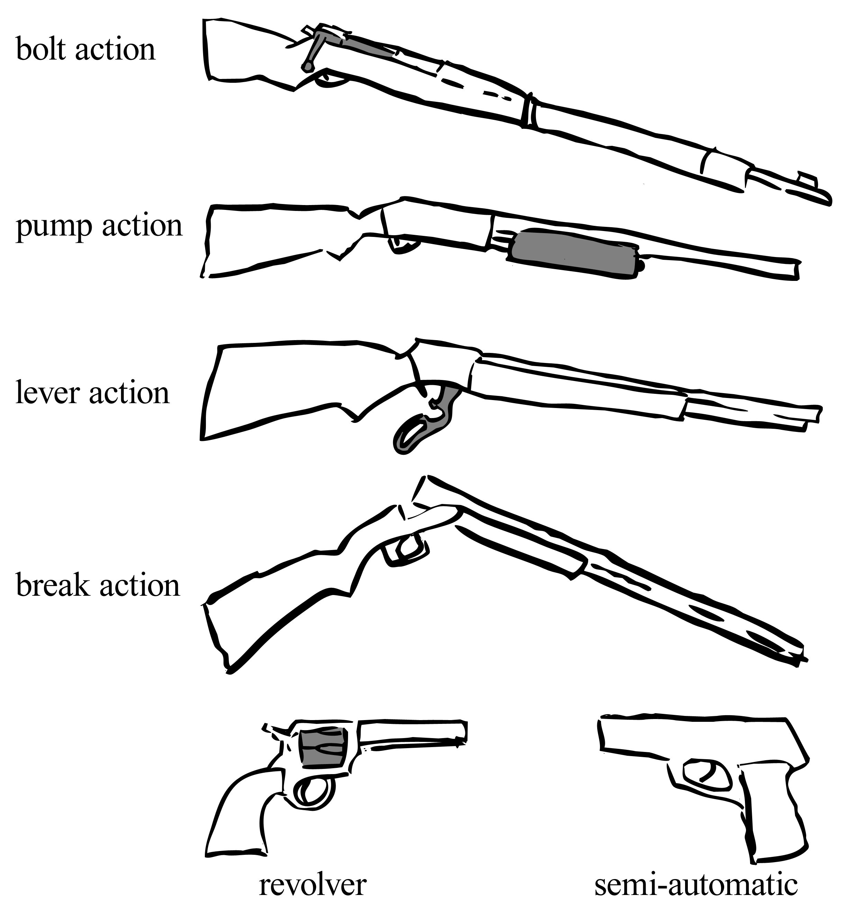

Armas de Fogo
Criado terça-feira 19 julho 2022
Apesar desse mundo se passar na epoca medieval, usando da magia e de tecnologias recuperada de dungeons os seres humanos conseguiram criar armas de fogo, mas essas armas sao diferentes das que usamos no mundo real e funcionam como um jeito automatico de usar magia sem precisar usar da propria mana
Não existe nenhuma arma automatica ou semi-automatica, todas as capsulas que sobram devem ser retiradas manualmente da arma com algum sistema como lever-action, pump-action, break-action ou bolt-action, com o mais popular sendo lever-action

Exemplo dos diferentes tipos de arma, revolver e semi-automatico não fazem parte e só estao ali como exemplo
Munições
Todas as armas tambem utilizam de tipos de munição especial feitos de pó de pedras magicas junto com mana de um grande mago imbutida.
Por causa disso, as armas atiram projeteis magicos ao invez de projeteis fisicos, a força e caracteristicas de um projetil magico de uma bala depende da qualidade da pedra que foi usada para sua criação e o conhecimento da mana do mago.
As balas sao dividas em tres categorias distintas:
- Categoria I é composta de balas feitas de uma pedra magica generica e barata o que resulta em um projetil magico que nao faz muita coisa e só da dano. Essa é categoria mais barata de munições;
- Categoria II tem balas feitas com pedras magicas especiais que podem ter efeitos elementares (fogo, gelo, eletricidade, etc.) no projetil. Por causa disso esse tipo de munição é mais cara e dificil de fabricar;
- Categoria III é composta de balas que possuem efeitos especiais diferentes dos elementais, como por exemplo, uma bala em que o tiro ao invez de causar dano pode curar alguem, ou uma bala que o tiro faz crescer vinhas ao involta do ponto atingido prendendo qualquer um ali. Essas balas podem fazer coisas muito diferentes de uma outra bala da mesma categoria, por isso o preço delas muda bastante de bala para bala mas geralmente elas sao mais caras que as de categoria II.
Backlinks: Lore do mundo:Lugares:Guilda dos Caçadores de Bruxa